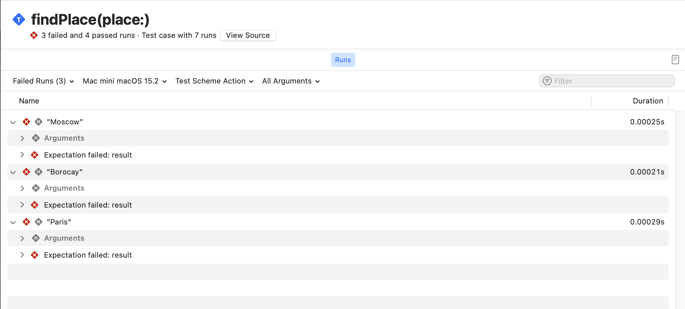

@Test(...)
Глава про макрос @Test разделена на 4 сценария:
Здесь ты столкнешься с распространенными проблемами в тестировании на практике и способы их решени.
Помимо этого, я расскажу о тонкостях работы макроса.
Прочитать о реализации данного макроса можно в главе о protocol Trait.
Условие или runtime condition
Во-первых, тесты с условием. Некоторые тесты должны выполняться только при определённых обстоятельствах — например, на конкретных устройствах или в определённом окружении (environments).
Для этого, ты можешь применить трейт условия (ConditionTrait) .enabled(if: ...):
@Test(.enabled(if: Backport.isRemoteVersion))
func backportVersion() async {
// ...
}
Ты передаешь некоторое условие, которое будет оцениваться перед запуском теста и если условие ложно, тест помечается как пропущенный и не выполняется.
→ Test 'backportVersion()' skipped
В других случаях необходимо полностью отключить выполнение теста (чтобы тест никогда не выполнялся). Для этого используй трейт .disabled(...):
@Test(.disabled("Известный баг, отключаем до фикса #PR-3781"))
func fetchFeatureFlag() async {
// ...
}
→ Test 'fetchFeatureFlag()' skipped: Известный баг, отключаем до фикса #PR-3781
Использование трейта .disabled(...) является предпочтительнее комментирования тела функции, поскольку в закомментированном состоянии — тело функции компилируется:
// Избегайте такого способа отключения теста
@Test("Закомментирую на время фикса #PR-3781")
func fetchAnotherFlag() {
// try await Task(priority: .background) {
// ...
// }
}
Тебе может показаться, что одного комментария недостаточно и по-хорошему нужно указать причину отключения: баг, ожидание PR (пулл реквеста) или иное условие. Что ж, в дополнение к комментарию ты можешь использовать трейт .bug(...), чтобы явно указать на проблему:
@Test(
"Проверка валидности поля именя",
.disabled("Бекендер исправляет модель"),
.bug("https://github.com/issue/7329", "Сломанная валидация имени и модель #7329")
)
func validateNameProperty() async throws {
// ...
}
Данный баг будет отображаться в отчете и ты сможешь перейти по ссылке, которая ассоциируется с ним:

Когда необходимо запустить тест только на конкретной версии ОС (операционной системы), можешь использовать атрибут @available(...), чтобы указать на какой версии доступен тест.
Атрибут @available(...) позволяет понимать, что у теста есть условие, связанное с версией операционной системы и точнее отражать это в результатах.
@Test
@available(macOS 15, *)
func usesNewAPIs() {
// ...
}
Избегайте использования проверки доступности с помощью макросов #available и #unavailable:
// ❌ Избегайте использования проверки доступности в рантайме с помощью #available и #unavailable
@Test
func hasRuntimeVersionCheck() {
guard #available(macOS 15, *) else { return }
// ...
}
// ✅ Используй атрибут @available для функции или метода
@Test
@available(macOS 15, *)
func usesNewAPIs() {
// ...
}

Атрибут @available(...) используется для обозначения доступности типа данных или функции, а макрос #available используется когда необходимо выполнить часть кода только в определенной версии ОС.
Общие характеристики или теги
Давай обсудим, как ты можешь объединять тесты, которые имеют общие свойства, даже если они находятся в разных типах данных или файлах. Swift Testing поддерживает создание пользовательских тегов для тестов.
note
Тег (или тэг) — это ключевое слово для обозначения общих свойств в тестах.
В моём проект я уже использовал теги. Найти их можно в навигационном меню Xcode, а именно в Test Navigator снизу.

Чтобы увидеть тесты, к которым применены теги, ты можешь переключиться в новый режим группировки — по тегам.

Давайте применим тег к одному из тестов. Для этого мы добавим трейт .tags(...) в атрибут @Test:
@Test("Сравниваем размер файла", .tags(.fileSize))
func checkSize() {
let fileSize = Measurement<UnitInformationStorage>(value: 2432, unit: .megabytes)
#expect(fileSize.description == "2.4MB")
}
После применения, тег отобразится в Test Navigator под соответствующим тегом. Я написал еще один тест, который также проверяет размер файла и добавлю его сюда:
@Test("Сравнение еще одного файла", .tags(.fileSize))
func checkSizeWithFormatter() {
let fileSize = Measurement<UnitInformationStorage>(value: 2432, unit: .megabytes)
let filter = Measurement<UnitInformationStorage>.FormatStyle(
width: .wide,
locale: .init(identifier: "ru_RU")
)
let formattedResult = filter.format(fileSize)
#expect(formattedResult != "2.4 Мегабайта")
}
Поскольку оба теста связаны с размером файла, давай сгруппируем их:
struct AboutFileSize {
@Test("Сравниваем размер файла", .tags(.fileSize))
func checkSize() {
let fileSize = Measurement<UnitInformationStorage>(value: 2432, unit: .megabytes)
#expect(fileSize.description == "2.4MB")
}
@Test("Сравнение еще одного файла", .tags(.fileSize))
func checkSizeWithFormatter() {
let fileSize = Measurement<UnitInformationStorage>(value: 2432, unit: .megabytes)
let filter = Measurement<UnitInformationStorage>.FormatStyle(
width: .wide,
locale: .init(identifier: "ru_RU")
)
let formattedResult = filter.format(fileSize)
#expect(formattedResult != "2.4 Мегабайта")
}
}
Теперь мы можешь применить тег fileSize к атрибуту @Suite, чтобы тег применялся ко всем тестам в этом типе данных. Поскольку теги применяются ко всем вложенным методам, то можно убрать теги из методов:
@Suite(.tags(.fileSize))
struct AboutFileSize {
@Test("Сравниваем размер файла")
func checkSize() {
// ...
}
// ...
}
Ты можешь ассоциировать теги с тестами, которые имеют общие черты. Например, ты можешь применить общий тег ко всем тестам, которые проверяют определенную функцию или вложенный тип данных. Это позволяет запускать все тесты с конкретным тегом, фильтровать их в Test Report и даже видеть аналитические данные, например, когда несколько тестов с одним и тем же тегом начинают падать.
Теги могут применяться к тестам в разных файлах, типам данных с атрибутом @Suite и даже использоваться в нескольких таргетах.
При использовании Swift Testing предпочтительнее использовать теги вместо имен тестов для их включения или исключения из тестового плана.
О том, как создать собственный тег прочитай здесь.
Аргументы
Перед прочтением тонкостей, я бы хотел показать последний процесс связанный с повторением тестов, а именно аргументами.
Предположим, что у тебя есть сервис по достопримечательностям и ты хочешь узнать информацию о каждом из них:
struct PlaceService {
func search(by name: String) async -> Bool {
let places: [String] = [
"Gullfoss",
"Saint Victor",
"Vestmannaeyjar",
"Skogafoss",
"Hong Kong"
]
return places.contains(name)
}
}
@Test
func findPlace() async throws {
let places: [String] = [
"Gullfoss",
"Moscow",
"Vestmannaeyjar",
"Skogafoss",
"Paris",
"Borocay",
"Hong Kong"
]
let service = PlaceService()
for place in places {
let result = await service.search(by: place)
#expect(result)
}
}

Тест выше работает, однако использование цикла for имеет свои недостатки:
- Ты не можешь видеть результат каждого вызова
#expect(…)в навигационном меню тестов. - Ты не можешь повторно запустить отдельный тест для одного элемента массива.
- Тесты выполняются последовательно.
Исправим ситуацию и передадим массив в качестве параметра arguments:
@Test(
arguments: [
"Gullfoss",
"Moscow",
"Vestmannaeyjar",
"Skogafoss",
"Paris",
"Borocay",
"Hong Kong"
]
)
func findPlace(place: String) async throws {
let service = PlaceService()
let result = await service.search(by: place)
#expect(result)
}
Просто добавь параметр в функцию, избавься от цикла for, переместите аргументы в атрибут @Test — и готово!

Параметризованные тесты можно использовать даже в более сложных сценариях, например для тестирования всех комбинаций двух наборов входных данных.

note
Слишком большой Range 0 ..< .max может выполняться очень долго или совсем не завершиться.
Тонкости
Последний параграф познакомит тебя с особенностями использования макроса @Test, которые доступны при детальном чтении исходного кода, который реализует сам макрос. За это отвечает структура данных TestDeclarationMacro.
Ты написал много методов и один из них изолирован на MainActor.
Поэтому помимо применения атрибута @Test, ты можешь применить глобальный актор, чтобы не получить ошибку компиляции на Swift 6:
@Test("Как определить, функция для теста изолирована на глобальном акторе ?")
@MainActor
func determineGlobalActor() async {
// ...
}
Для выполнения кода и изоляции на глобальном акторе, можно применить глобальный актор к функции. Если изоляция не нужна для всей функции, то можно изолировать только определенный код:
@Test
func executeAtGlobalActor() async {
await MainActor.run {
// ...
}
}
Да, разработчики подготовили специальный механизм для определения изоляции и выполнения на MainActor. Если ты знаешь как реализовать собственный глобальный актор,
то у меня плохие новости — Swift Testing не умеет определять изоляцию для
кастомных глобальных актор, только MainActor.
lazy var isMainActorIsolated = !functionDecl.attributes(named: "MainActor", inModuleNamed: "_Concurrency").isEmpty
var forwardCall: (ExprSyntax) -> ExprSyntax = {
"try await Testing.__requiringTry(Testing.__requiringAwait(\($0)))"
}
let forwardInit = forwardCall
if functionDecl.noasyncAttribute != nil {
if isMainActorIsolated {
forwardCall = {
"try await MainActor.run { try Testing.__requiringTry(\($0)) }"
}
} else {
forwardCall = {
"try { try Testing.__requiringTry(\($0)) }()"
}
}
}
note
Swift Testing умеет определять изоляцию только MainActor. Поддержки других глобальных акторов (@globalActor) нет.
Нет необходимости возвращать тип данных
Если ты внимательно читал код, то обратил внимание что ни одна функция не возвращает конкретный тип данных. Указание возвращаемого типа данных не является ошибкой, проверка с помощью макросов выполняется, но в этом случае ты получишь предупреждение:
@Test
func checkReturnType() -> any Collection {
let collection = Array(1...10)
#expect(collection.contains(10))
return collection
}
⚠️ The result of this function will be discarded during testing
Возможно в будущем, инженеры Apple добавят такую возможность, но на данный момент они не нашли подходящего сценария, при котором необходимо возвращать тип данных. Такая проверка возможна с помощью проверки сигнатуры возвращаемого типа:
if let returnType = function.signature.returnClause?.type, !returnType.isVoid {
diagnostics.append(.returnTypeNotSupported(returnType, on: function, whenUsing: testAttribute))
}
Неподдерживаемые ключевые слова
На момент выхода книги, в структуре данных TestDeclarationMacro, которая реализует макрос @Test, существуют неподдерживаемые ключевые слова:
struct TestDeclarationMacro: PeerMacro, Sendable {
// ...
// Ключевые слова inout, isolated или _const не поддерживаются.
for parameter in parameterList {
let invalidSpecifierKeywords: [TokenKind] = [.keyword(.inout), .keyword(.isolated), .keyword(._const),]
// ...
}
}
Это легко проверить, создав тест с одним из этих ключевых слов:
@Test("Проверка не поддерживаемых слов")
func parameterCanBeSupported(value: isolated (any Actor)? = #isolation) {}
❌ Attribute
Testcannot be applied to a function with a parameter markedisolated
А теперь посмотри на ключевое слово _const:
func withImmutableValue(value: _const String) -> {
value
}
Значения, известные на этапе компиляции (compile-time constant values), — это значения, которые могут быть известны или вычислены во время компиляции и гарантированно не изменяются после её завершения. Использование таких значений может служить различным целям: от обеспечения правил и гарантий безопасности до предоставления пользователям возможности создавать сложные алгоритмы, выполняемые на этапе компиляции.
note
Ознакомится более подробно с _const.
Test только для func
Возможно тебе захочется применить атрибут для теста замыкания, но ничего не выйдет. При сборке таргета с тестами, кнопки запуска не появится. Или иными словам, ты можешь применить атрибут только для функций или методов:
guard let function = declaration.as(FunctionDeclSyntax.self) else {
diagnostics.append(.attributeNotSupported(testAttribute, on: declaration))
return false
}
1 атрибут для 1 функции
Да, для кого-то это покажется слишком очевидным, но применить атрибут @Test можно только 1 раз:
let suiteAttributes = function.attributes(named: "Test")
if suiteAttributes.count > 1 {
diagnostics.append(.multipleAttributesNotSupported(suiteAttributes, on: declaration))
}
Не приминим для Generics
Атрибуты @Test и @Suite не могут быть применены к дженерикам:
/// Create a diagnostic message stating that the `@Test` or `@Suite` attribute
/// cannot be applied to a generic declaration.
static func genericDeclarationNotSupported(_ decl: some SyntaxProtocol, whenUsing attribute: AttributeSyntax, becauseOf genericClause: some SyntaxProtocol, on genericDecl: some SyntaxProtocol) -> Self {
if Syntax(decl) != Syntax(genericDecl), genericDecl.isProtocol((any DeclGroupSyntax).self) {
return .containingNodeUnsupported(genericDecl, genericBecauseOf: Syntax(genericClause), whenUsing: attribute, on: decl)
} else {
// Avoid using a syntax node from a lexical context (it won't have source location information.)
let syntax = (genericClause.root != decl.root) ? Syntax(decl) : Syntax(genericClause)
return Self(
syntax: syntax,
message: "Attribute \(_macroName(attribute)) cannot be applied to a generic \(_kindString(for: decl))",
severity: .error
)
}
}
Получаем ошибку компиляции:
@Test
func sumOf<V: Numeric>() {
// ...
}
❌ Attribute 'Test' cannot be applied to a generic function